📊 指标均值 · 清晰呈现本类素材基准指标，帮你快速定位差距，校准优化方向
消耗(均值)
—增长量(均值)
—CTR (均值)
3.42%CVR (均值)
10.41%3s完播 (均值)
63.9%播放时长(均值)
18.1s📚 方法论沉淀 · 拆解开篇类型核心打法，吃透爆款底层逻辑，轻松拿捏创作节奏
🎬开篇方式细分· 还原头部素材的爆款开篇套路，直接参考高起量创作范式（推荐指数=消耗量级）
真人痛点特写型⭐⭐⭐⭐⭐
真人出镜展示皱纹/眼袋/斑点/白发等皮肤问题特写，配合达人口播讲解痛点危害，如婆婆纹显老、眼袋堆积等。消耗量级最高，素材#18消耗65.9万为代表
AI/手绘痛点型⭐⭐⭐⭐
通过手绘素描图、中医经络图、眼部模型标注等非真人画面展现痛点位置和问题成因，建立专业感和可信度，适合需要科普教育的品类
剧情冲突痛点型⭐⭐⭐
通过夫妻争吵、高铁让座、台球厅搭讪等生活化剧情制造冲突，在剧情中自然引出痛点和产品，趣味性强但制作成本较高
📋脚本框架· 标准化脚本流程拆解，素材组合直接照着用，降低创作试错成本（6 段）
A
痛点视觉冲击开场
⏱ 0-5s
用皱纹/眼袋/斑点/白发等痛点特写或夸张效果对比，制造强视觉冲击吸引停留，引发用户焦虑共鸣
📌 皱纹皮肤特写+产品涂抹起泡消失、半脸对比实测、同龄人反差对比、剧情冲突引出痛点、显微镜细菌画面制造恐惧
B
产品亮相效果演示
⏱ 5-25s
展示产品外观及即时使用效果，通过半脸对比、纸巾测试等方式直观呈现产品功效差异
📌 半脸涂抹对比瞬间提亮、纸巾擦拭测试、防水防汗喷水实测、多部位瑕疵遮盖演示、涂抹即平的夸张效果
C
卖点成分轰炸
⏱ 25-50s
密集输出产品核心卖点和成分背书，建立专业信任感，强化产品差异化价值
📌 50年国货老品牌、人参/肝素钠/A醇等成分、不卡粉不脱妆、养肤不加粉、晚上用太猛了、不用调不用配
D
多重信任背书
⏱ 50-80s
通过明星推荐、素人证言、街头采访等多维度社会认同，消除用户购买顾虑
📌 于震/王琳/刘晓庆等明星背书、60岁大姐改善后惊喜反应、街头采访路人好评、用户感恩证言
E
限时促销逼单
⏱ 80-120s
制造价格紧迫感和稀缺性，通过阶梯降价、限时福利刺激用户即时决策下单
📌 全场一折、拍一发二/发三/发四、周年庆福利、工厂直发包邮、再不买就恢复原价、限购一单
F
引导下单转化
⏱ 120s+
最终促单环节，展示赠品礼盒组合，强调直播间专属福利，引导点击进入购买
📌 礼盒赠品堆砌展示、直播间新品福利、点击进入直播间、趁活动赶紧冲
☁️核心词云· 提炼高频重点标签，靠前标签即高机会，快速抓准流量密码（痛点词 / 功效词）
😣 痛点词 · 20 词
眼袋皱纹法令纹婆婆纹川字纹抬头纹泪沟暗沉斑点显老白发熊猫眼黑眼圈卡粉脱妆花妆氧化泛红眼纹颈纹
💊 功效词 · 20 词
抗皱紧致淡纹提亮遮瑕养肤持妆防水防汗不卡粉不脱妆淡斑美白控油祛痘保湿淡化提拉祛斑去眼袋遮盖
💬常见爆款话术· 整理高转化爆款话术，直接复用提升素材起量率与吸引力（≥2 条素材出现，产品名已隐藏）
🚀跑量关键点· 跑量必备要素清单，逐项 check，确保创作不踩坑
- **痛点特写放大焦虑**：微距特写皮肤问题配显老话术，视觉化痛点激发改变欲望
- **同龄反差激痛点**：同龄人对比引发显老焦虑，直击用户心理
- **即时效果奇观**：涂抹起泡瞬间抚平，前后强对比建立功效信任
- **明星素人双背书**：明星口播+素人证言组合，用冻龄状态证明功效
- **阶梯降价逼单**：层层递进降价+限时限量话术，制造稀缺感促转化
📈高光时序数据· 近 7 天日均真实播放进度数据
55/73 条素材有高光时序（覆盖率 75.3%）；关键转化点主要集中在 15-30s。点击/点赞/转发/流失关键点分别为 138/47/36/74 个。
内容策略与转化表现
内容承接
正向 63 · 流失 22 · 平均 19.0s
点击 38 / 点赞 19 / 转发 6 / 流失 22
点击 38 / 点赞 19 / 转发 6 / 流失 22
“旁白A：『女人不画底妆是没有气质的，不会画底妆的。』”
实测演示
正向 52 · 流失 20 · 平均 22.9s
点击 33 / 点赞 8 / 转发 11 / 流失 20
点击 33 / 点赞 8 / 转发 11 / 流失 20
“博主：『这边是粉底，这个脸上是贵妇膏，做一个现场测试』”
痛点问题
正向 47 · 流失 15 · 平均 17.7s
点击 29 / 点赞 8 / 转发 10 / 流失 15
点击 29 / 点赞 8 / 转发 10 / 流失 15
“女性旁白：『为什么说漂亮的女人都用这个谷雨胶原固态淡纹棒保养，因为它真的是有点厉害』(画面：秦岚侧脸特写+产品涂抹法令纹)”
信任背书
正向 35 · 流失 6 · 平均 20.1s
点击 23 / 点赞 7 / 转发 5 / 流失 6
点击 23 / 点赞 7 / 转发 5 / 流失 6
“女性旁白：『水乳留给十几岁的小姑娘用，现在还在用水乳，你是怕自己脸垮的太慢了。你要是皮肤干的、黄的、垮的，你就好好用这个谷雨的胶原精华棒去护肤』(画面：秦岚涂抹+苹果肌展示) 字幕：谷雨品牌代言人秦岚”
行动催单
正向 34 · 流失 13 · 平均 36.5s
点击 22 / 点赞 5 / 转发 7 / 流失 13
点击 22 / 点赞 5 / 转发 7 / 流失 13
“女性旁白：『水乳留给十几岁的小姑娘用，现在还在用水乳，你是怕自己脸垮的太慢了。你要是皮肤干的、黄的、垮的，你就好好用这个谷雨的胶原精华棒去护肤』(画面：秦岚涂抹+苹果肌展示) 字幕：谷雨品牌代言人秦岚”
口碑证明
正向 27 · 流失 7 · 平均 38.3s
点击 20 / 点赞 3 / 转发 4 / 流失 7
点击 20 / 点赞 3 / 转发 4 / 流失 7
“博主：『你看一下这个皮肤，来我们再看一下啊，发光，一分钟打造一个素颜裸肌，别人看不出来你用过什么，但是你皮肤就是很亮。来关键是什么？养肤不加一滴粉，这个纸有多干净这个脸就多干净。刚才这个是擦过粉底的。所以你皮肤特别想要，就皮肤黑皮肤黄想要皮肤亮的姐妹们，你们去找谷雨贵妇膏』”
- 内容可解释率 100.0%：295/295 个关键点匹配到对应脚本或结构文案。
- 正向转化最强的是「内容承接」：出现 63 个点击/点赞/转发关键点，平均发生在 19.0s；典型内容“旁白A：『女人不画底妆是没有气质的，不会画底妆的。』”。
- 主要流失风险来自「内容承接」：对应 22 个流失关键点，平均发生在 18.9s；需优先压缩或改写“达人：『以前长出来一点就要去染，有了它就真的很方便』”。
关键点内容证据
7cb564b5 · 72.0s · 流失最大流失点（142.7）用户在此大量划走
ab37f5a7 · 30.0s · 点击点击峰值（142.6）
087f4827 · 40.0s · 流失最大流失点（142.6）用户在此大量划走
54140384 · 18.0s · 流失最大流失点（142.1）用户在此大量划走
f58f23be · 33.0s · 流失最大流失点（142.1）用户在此大量划走
3503da5a · 39.0s · 流失最大流失点（142.1）用户在此大量划走
9cb1fe97 · 94.0s · 流失最大流失点（142.1）用户在此大量划走
971ba396 · 16.0s · 流失最大流失点（141.1）用户在此大量划走
🏆 代表素材关键帧拆解 · 品牌 / 非品牌各 Top5（按消耗降序）
🏪 品牌素材 Top5（按消耗降序）

#1
消耗 — · 增长量 — · CTR 1.38% · CVR 14.23% · 3s完播 30.6% · 播放时长 9.3s
🎂 转化人群年龄分布 主力 40-50
40- 19.3%40-50 49.0%50+ 31.6%
19-24 0.3%25-29 0.5%30-34 3.2%35-39 15.3%40-44 24.2%45-49 24.8%50-54 16.0%55-59 9.1%60-64 4.7%65+ 1.9%
开篇类型属于达人实测对比+多素人证言型。开篇博主用左右脸分别涂抹粉底和贵妇膏，做现场对比测试制造悬念。接着用纸巾擦拭粉底脸，展示黄色污渍，痛点揭露色素重金属堵毛孔的危害。重点展示贵妇膏一涂即亮、纸巾擦完依然洁白的视觉奇观，强调山参成分养肤不加粉。随后切入多位素人模特证言，强化不卡粉不脱妆的夏季刚需卖点。结尾展示礼盒赠品堆叠，用直播间新品福利促单，引导即刻下单。
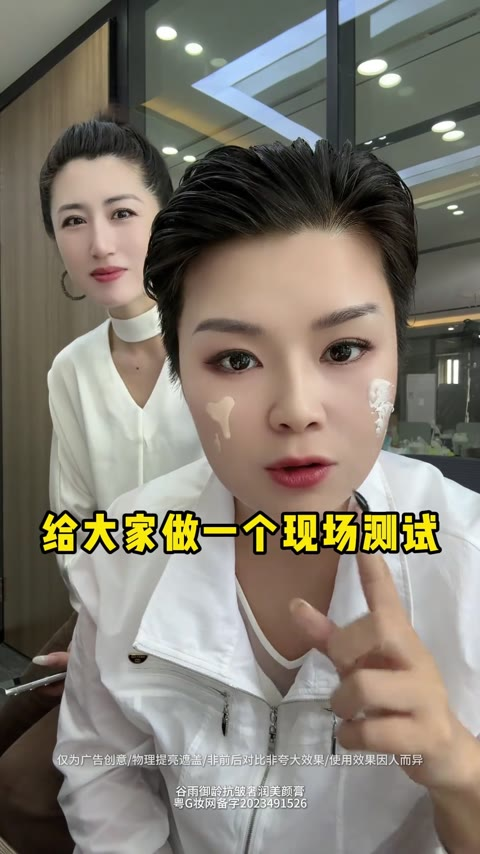
痛点+悬念开场
0-5s
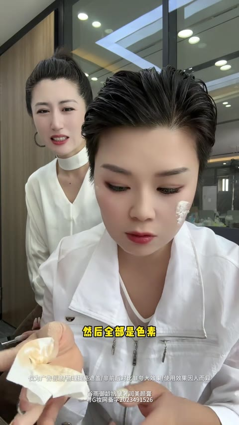
痛点放大
5-20s

产品演示
21-55s

效果对比
56-76s

多人证言
77-113s
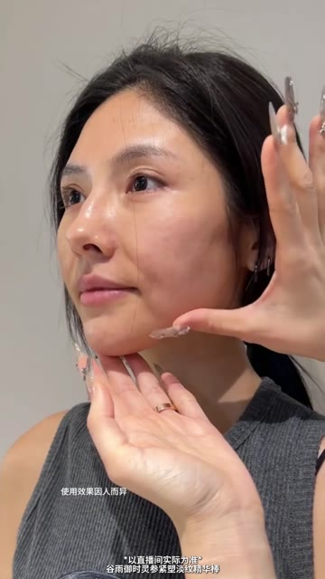
#2
消耗 — · 增长量 — · CTR 2.62% · CVR 12.57% · 3s完播 41.6% · 播放时长 10.6s
🎂 转化人群年龄分布 主力 50+
40- 5.4%40-50 32.4%50+ 62.2%
0-13 0.1%19-24 0.2%25-29 0.2%30-34 0.8%35-39 3.9%40-44 12.5%45-49 19.9%50-54 23.1%55-59 18.5%60-64 12.3%65+ 8.3%
开篇类型属于痛点对比+明星背书型。开篇直接展示面部松弛女性，用手托提拉制造即时对比，配合『你要是也这样就不要再拖了』引发焦虑共鸣。接着通过雕像涂抹去皱的夸张视觉奇观强化产品功效印象。随后切入明星秦岚和演员肖涵的使用推荐，建立信任背书。重点展示产品针对眼尾纹、法令纹、木偶纹、颈纹的多部位使用方法，强调『居家SPA』替代美容院的性价比。通过成分动画解析人参皂苷CK、重组III型胶原等核心成分。结尾以『拍2发4』促销信息和紧迫感话术引导下单。
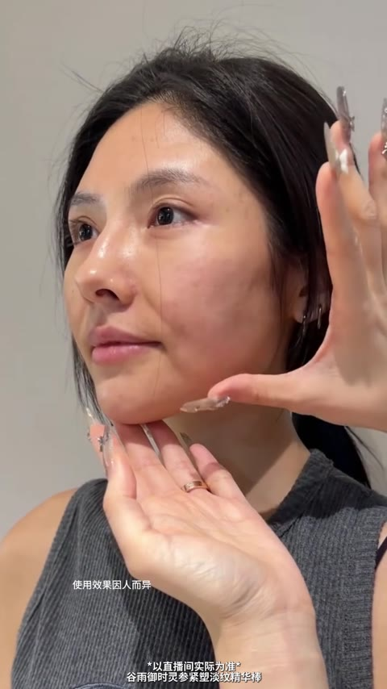
痛点引入
0-3s

视觉奇观
3-12s
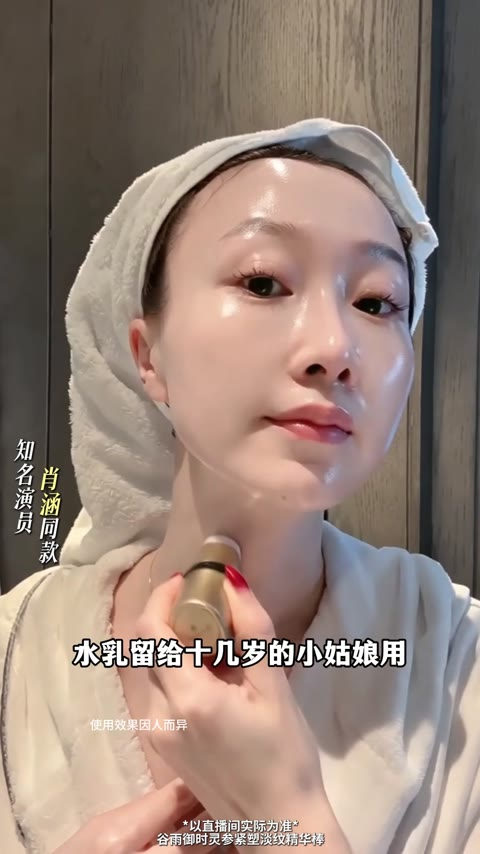
明星背书
13-33s

多部位演示
34-55s
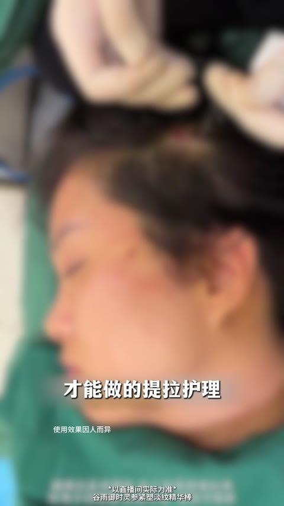
价值对比
56-62s
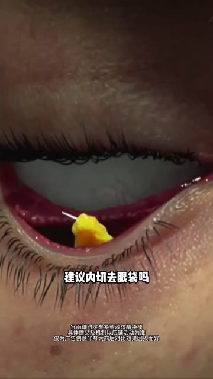
#3
消耗 — · 增长量 — · CTR 1.94% · CVR 18.23% · 3s完播 55.2% · 播放时长 8.8s
🎂 转化人群年龄分布 主力 50+
40- 4.6%40-50 44.3%50+ 51.1%
19-24 0.1%25-29 0.1%30-34 0.5%35-39 3.9%40-44 15.7%45-49 28.6%50-54 25.2%55-59 15.1%60-64 7.5%65+ 3.3%
开篇类型属于医生问答+明星背书型。开篇以医生专业人设抛出『内切外切去眼袋』的灵魂拷问，用手术镜头制造紧张感后引出某品牌胶原棒作为替代方案。接着展示女性眼部松弛痛点，用『这里掉下来就不要拖延』戳中焦虑。重点展示秦岚、吴昕、程潇三位明星的直播切片，用『续命』『亲自试用』『离不开会慌』等真情实感建立信任。随后用『它很贵但xx怕它』的排比句式强化功效记忆点。结尾主播激情促销，买一送一、拍一发四的福利组合拳引导下单。
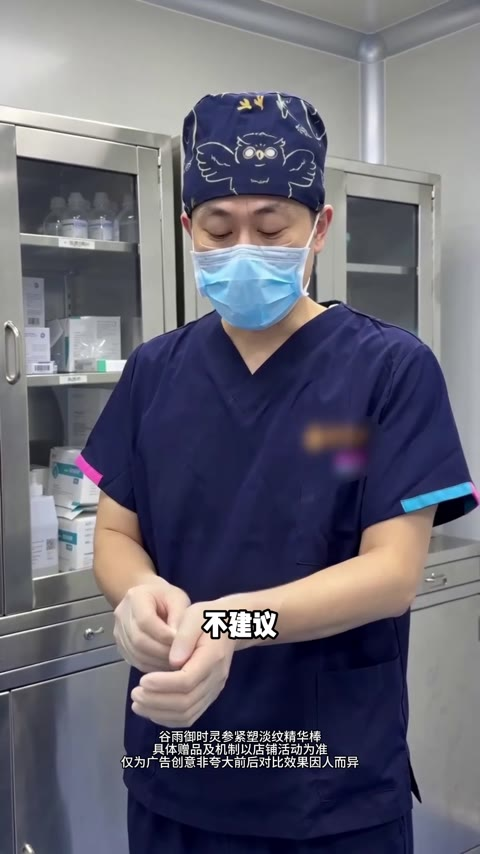
痛点+悬念开场
0-8s
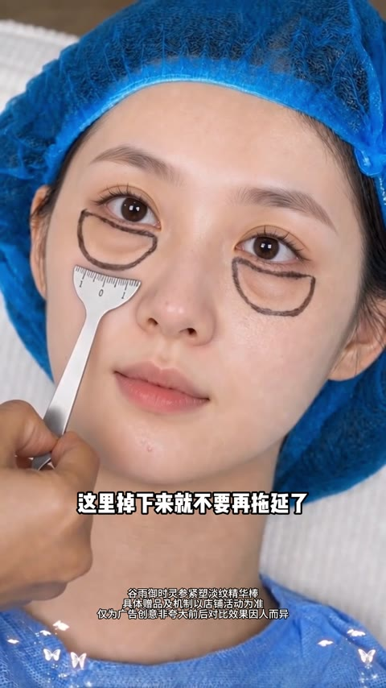
痛点强化
8-14s
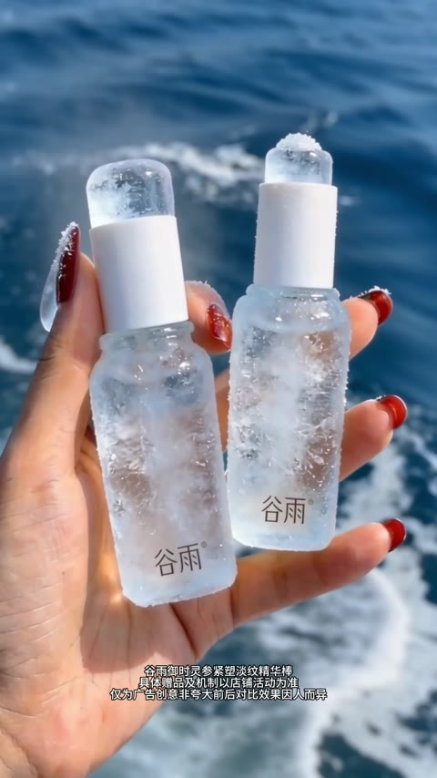
产品演示
14-20s
明星背书
20-47s
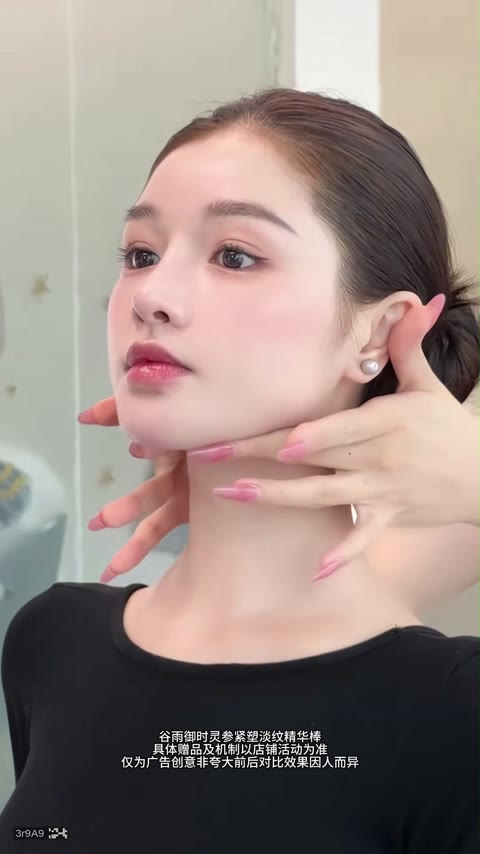
卖点轰炸
47-62s
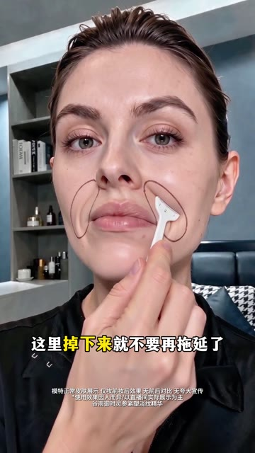
#4
消耗 — · 增长量 — · CTR 3.70% · CVR 4.73% · 3s完播 42.0% · 播放时长 7.9s
🎂 转化人群年龄分布 主力 40-50
40- 12.6%40-50 46.0%50+ 41.5%
0-13 0.1%19-24 0.2%25-29 0.4%30-34 2.2%35-39 9.7%40-44 22.3%45-49 23.7%50-54 17.2%55-59 12.4%60-64 6.6%65+ 5.4%
开篇类型属于痛点对比+明星背书型。开篇用面部法令纹标记特写配合『掉下来就不要拖延』的警告式话术，瞬间抓住有皮肤松弛困扰的用户。接着展示产品外观和多位模特涂抹使用场景，强调『不用调不用配』的便捷性。重点展示秦岚、吴昕、何洁三位明星的推荐切片，通过『亲自试用』『无脑冲』『离不开』等真实口吻建立信任背书。随后用『它很贵但改善法令纹很牛』的反差话术强化产品价值感。结尾抛出周年宠粉『拍一发二、拍二发四』的强力促销，配合产品堆叠画面引导下单转化。
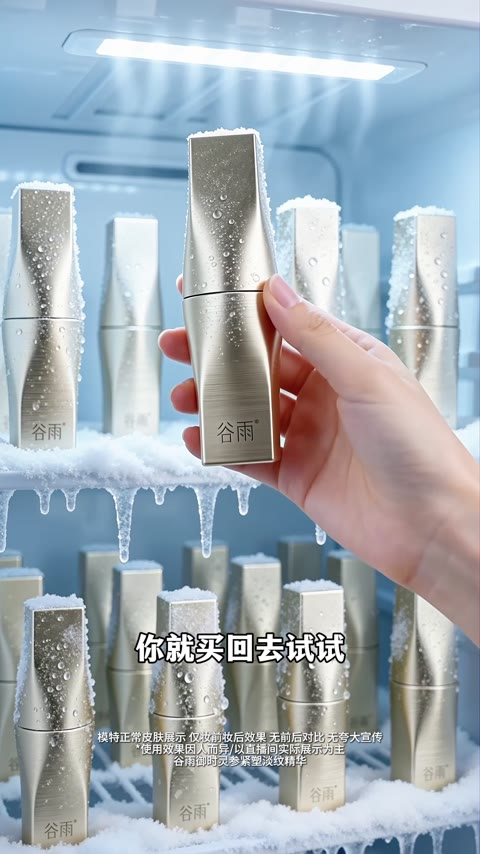
痛点引入
0-4s
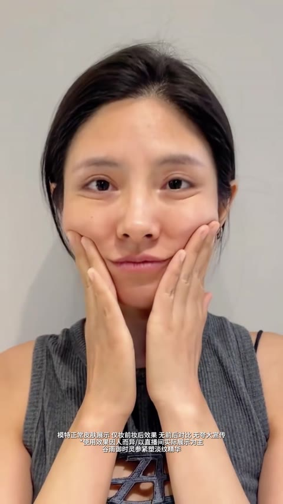
产品亮相
4-8s
使用演示
8-15s
明星背书
15-36s
卖点轰炸
36-45s
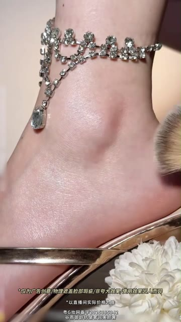
#5
消耗 — · 增长量 — · CTR 1.92% · CVR 10.03% · 3s完播 55.2% · 播放时长 21.2s
🎂 转化人群年龄分布 主力 50+
40- 10.4%40-50 39.7%50+ 50.0%
0-13 0.3%19-24 0.4%25-29 0.6%30-34 2.0%35-39 7.1%40-44 15.6%45-49 24.1%50-54 18.9%55-59 15.6%60-64 10.1%65+ 5.3%
开篇类型属于痛点对比+多达人实测型。开篇在脚踝处进行粉底液与贵妇膏的服帖度对比测试，用『卡粉vs服帖细腻』的视觉冲击吸引停留。接着达人在脸部同时涂抹粉底液、隔离霜、贵妇膏三款产品，通过纸巾擦拭测试展示粉底液易脱妆发黄、隔离霜假白不自然的缺点，突出贵妇膏的养肤透亮优势。重点展示产品含长白山人参精华、不含粉质、30秒成膜等核心卖点，并切换多位达人演示『3分钟妈生伪素颜』效果。结尾强调人参皂苷CK、胶原肽矩阵等成分背书，以新品福利引导下单。
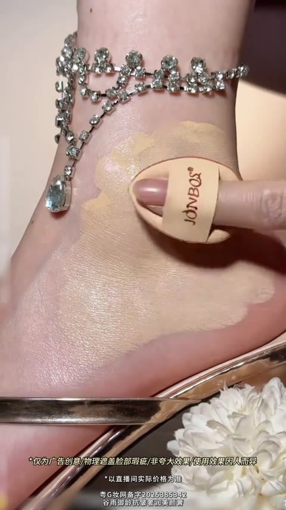
痛点对比开场
0-17s
三方产品实测
18-65s
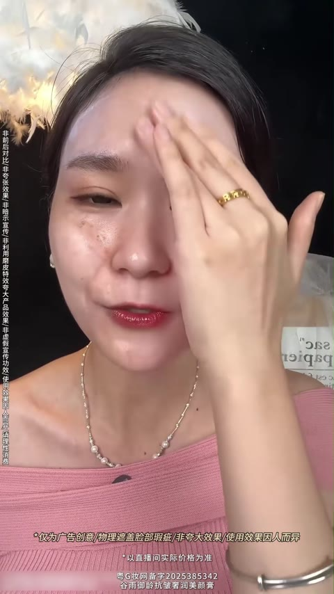
产品卖点演示
66-133s
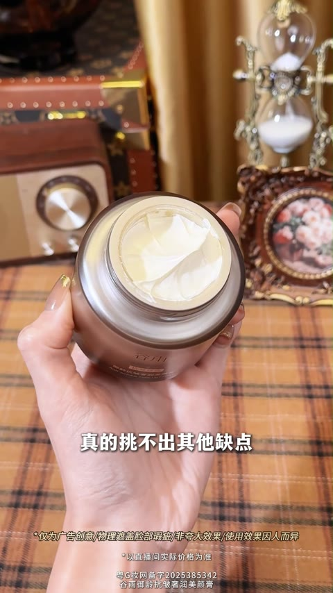
多场景种草
134-186s
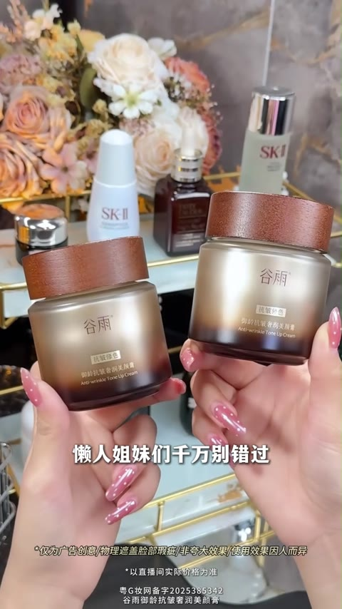
成分背书
187-236s
🏬 非品牌素材 Top5（按消耗降序）
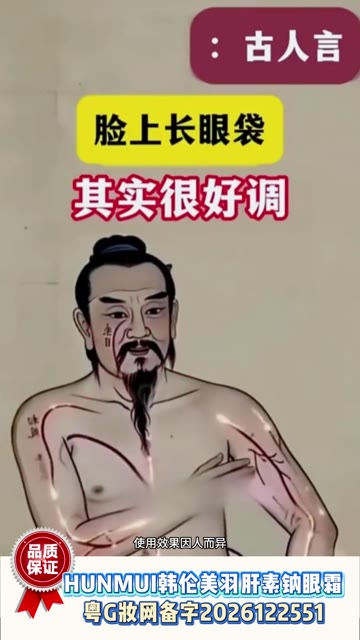
#1
消耗 — · 增长量 — · CTR 5.30% · CVR 12.61% · 3s完播 61.0% · 播放时长 17.6s
🎂 转化人群年龄分布 主力 50+
40- 0.0%40-50 0.0%50+ 100.0%
50-54 21.6%55-59 23.9%60-64 24.8%65+ 29.8%
开篇类型属于痛点放大+专家背书型。开篇以『古人言』中医经络图切入，配合眼部模型标注痛点位置，建立专业感。接着医生针对熊猫眼、大水袋、深泪沟三大问题统一开出『肝素钠』处方，强化成分权威。随后多位达人展示产品使用场景，强调『晚上涂它去睡觉』的便捷性和『国货舍得下料』的品质背书。中段加入『嫁给富婆』等情感化叙事增加趣味性。后段主播阳阳出镜宣布一折促销并做出自产自销承诺，完成信任闭环与下单引导。
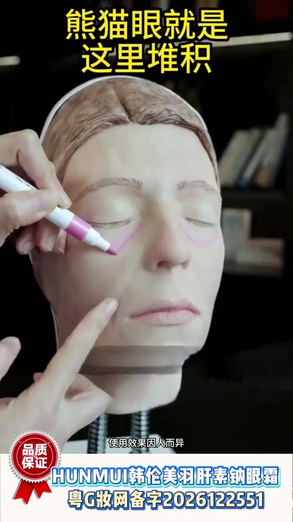
痛点+专家开场
0-6s
成分背书
6-14s
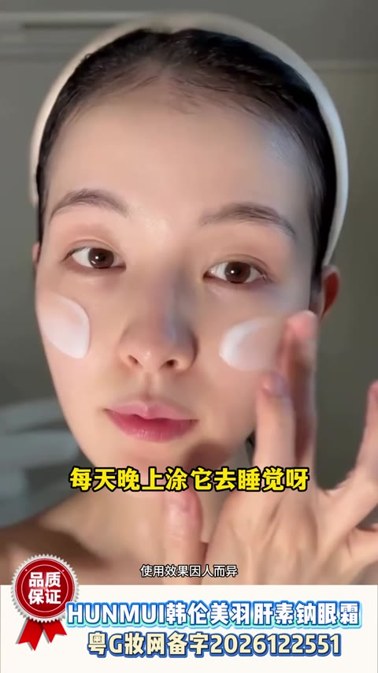
产品引入
14-22s
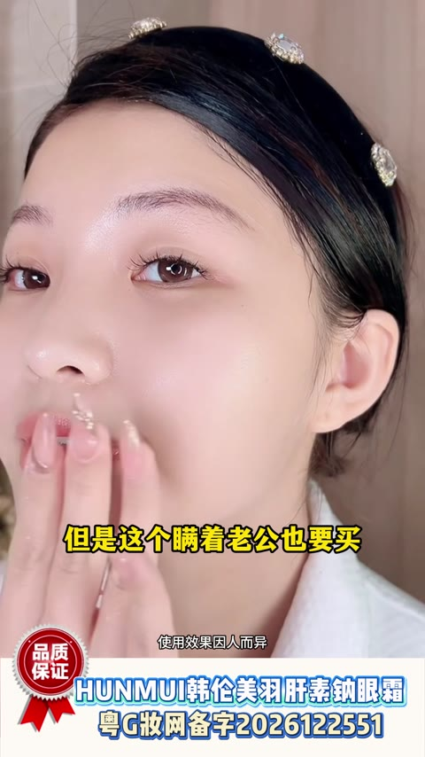
效果展示
22-35s
促销限时
35-50s
#2
消耗 — · 增长量 — · CTR 1.81% · CVR 12.55% · 3s完播 69.9% · 播放时长 12.0s
🎂 转化人群年龄分布 主力 50+
40- 5.1%40-50 26.5%50+ 68.4%
25-29 0.4%30-34 1.1%35-39 3.6%40-44 9.5%45-49 17.0%50-54 22.8%55-59 20.6%60-64 15.3%65+ 9.7%
开篇类型属于剧情反转+痛点展示型。开篇以台球厅搭讪剧情切入，男子搭讪美女却被夸张眼袋吓到，制造强烈视觉冲击。接着产品亮相，男子直接用白云山眼油为女子涂抹，眼袋瞬间消失。随后明星于震出镜详细讲解不同部位的使用方法，承诺『14天无效可退』建立信任。中段加入街头素人证言和演员王琳双重背书，强调国货品质和50年品牌底蕴。展示60岁大姐和57岁大叔改善前后的惊喜反应，形成强效果对比。结尾于震在仓库场景宣布『买正装送正装』促销，营造热销紧迫感引导下单。
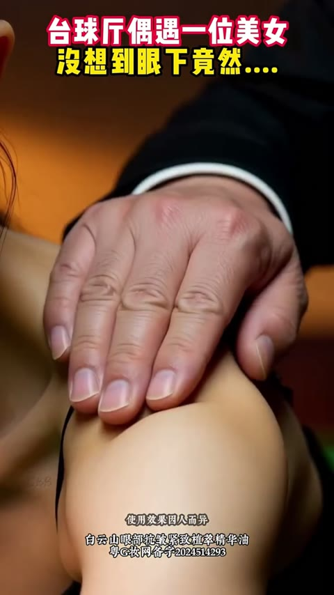
剧情痛点开篇
0-4s
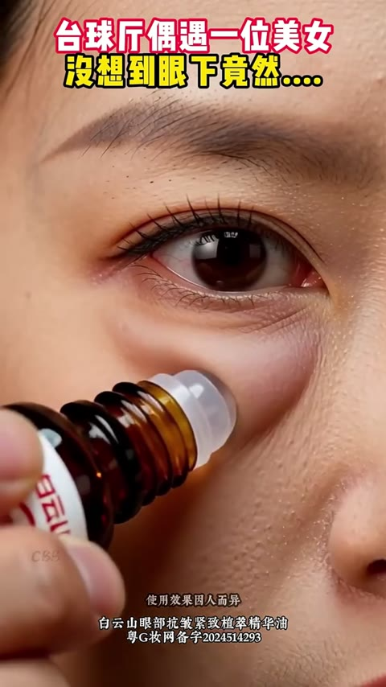
产品亮相
4-11s
明星背书
11-27s
用户证言
27-29s
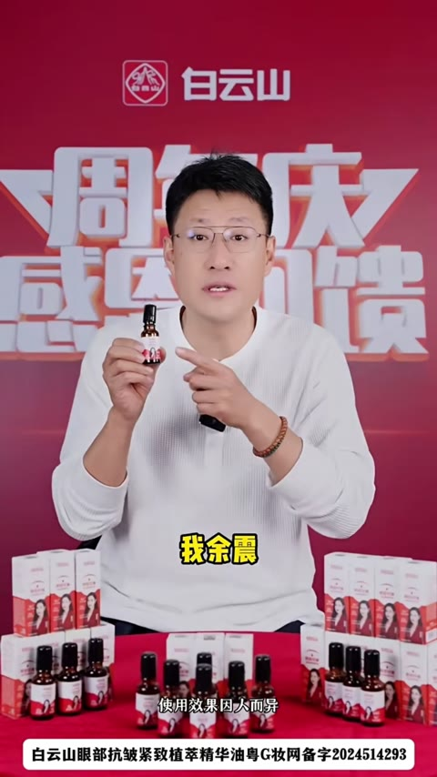
多重背书
29-57s
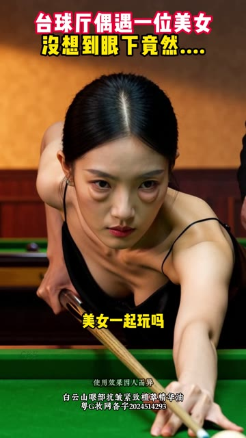
#3
消耗 — · 增长量 — · CTR 1.77% · CVR 11.89% · 3s完播 68.3% · 播放时长 11.5s
🎂 转化人群年龄分布 主力 50+
40- 4.2%40-50 35.4%50+ 60.4%
30-34 0.8%35-39 3.4%40-44 13.7%45-49 21.7%50-54 22.3%55-59 18.1%60-64 12.6%65+ 7.5%
开篇类型属于痛点对比+明星背书型。开篇以台球厅偶遇剧情切入，通过男子搭讪发现美女眼袋的戏剧化场景，直观展示眼袋痛点，产品涂抹后眼袋瞬间消失制造视觉冲击。接着由旁白科普眼袋危害，引出明星于震做产品推荐官背书，承诺14天无效可退。重点展示多位用户证言，包括75岁张女士等不同年龄段的真实反馈，强化信任。加入王琳等明星使用案例，展示产品成分（人参、灵芝等）和生产线画面，突出40年国货老品牌实力。结尾通过口碑号召引导转化。
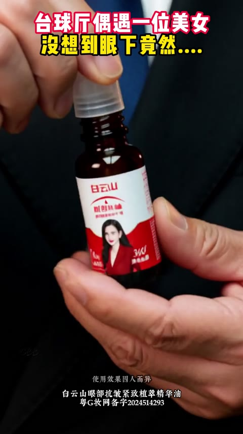
剧情痛点引入
0-10s
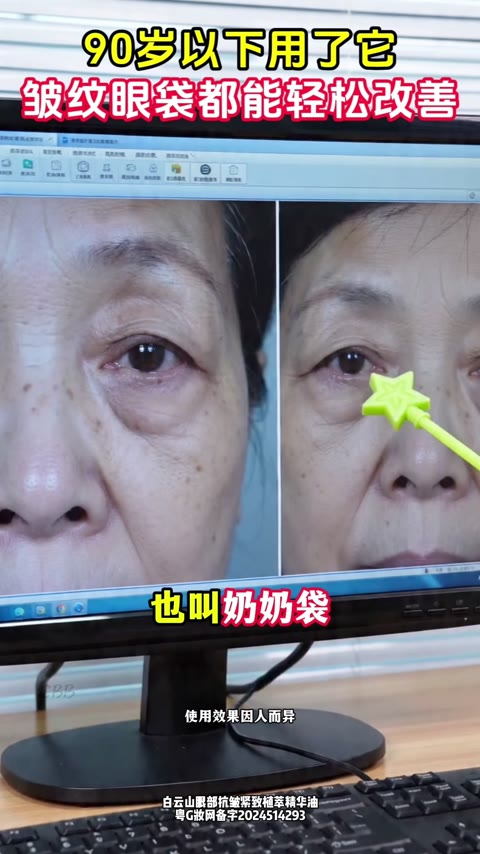
痛点科普
10-20s
明星背书
20-40s
用户证言
40-55s
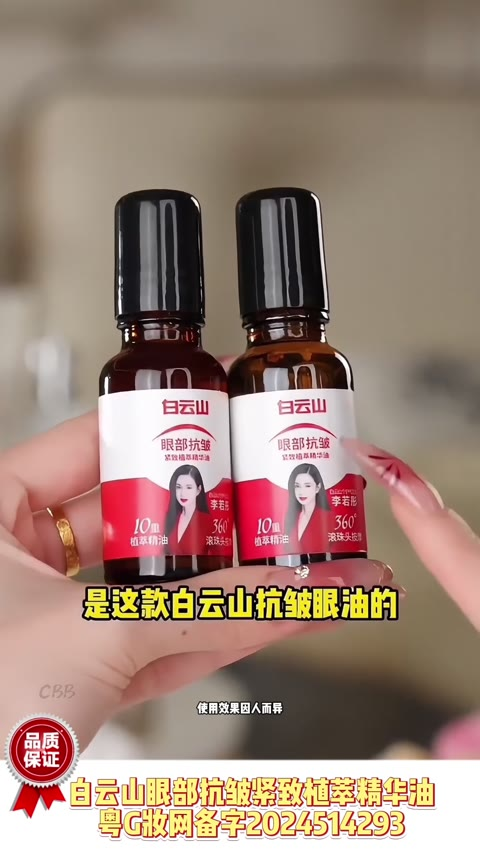
卖点轰炸
55-75s
#4
消耗 — · 增长量 — · CTR 0.62% · CVR 5.12% · 3s完播 68.6% · 播放时长 15.7s
🎂 转化人群年龄分布 主力 50+
40- 7.2%40-50 31.2%50+ 61.6%
30-34 1.3%35-39 5.8%40-44 12.3%45-49 19.0%50-54 23.2%55-59 21.2%60-64 17.2%
开篇类型属于痛点对比+明星背书型。开篇以台球厅搭讪剧情切入，男女双方眼袋特写制造痛点共鸣和戏剧冲突。于震作为品牌推荐官亮相，拿出白云山眼油产品并演示涂抹效果。接着于震口播强调产品功效，用『90岁以下用了脸上不该有纹』的夸张话术建立信任。穿插王琳、李颖等明星使用案例和素人街采证言，强化社会认同。展示白云山50年老品牌背景、灵芝人参基地等品牌资产。结尾以『免费领取一单』促销钩子引导进入直播间下单。
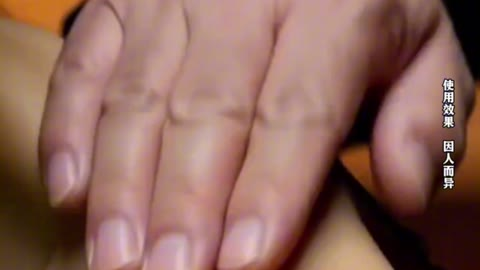
痛点+剧情开场
0-4s
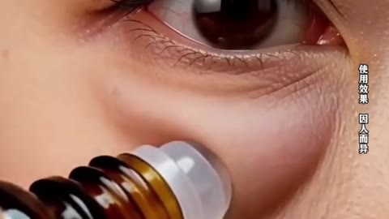
产品亮相
5-10s
明星口播背书
11-28s
明星案例展示
29-33s
用户证言
34-47s

#5
消耗 — · 增长量 — · CTR 0.93% · CVR 9.56% · 3s完播 22.3% · 播放时长 4.5s
🎂 转化人群年龄分布 主力 40-50
40- 33.2%40-50 55.7%50+ 11.1%
0-13 0.1%14-18 0.0%19-24 0.2%25-29 0.4%30-34 4.4%35-39 28.2%40-44 35.3%45-49 20.4%50-54 6.4%55-59 2.0%60-64 1.4%65+ 1.2%
开篇类型属于痛点对比+达人背书型。开篇用青少年额头密集闭口特写配合显微镜下痤疮丙酸杆菌游动画面，制造强烈视觉冲击和恐惧感。接着展示多位青少年满脸痘痘的真实案例，用妈妈视角的愧疚感引发家长共鸣。重点展示军献祛痘膏的草本配方卖点，强调12种植物萃取、积雪草水杨酸、透皮技术等专业成分。加入演员白冰的推荐背书，以妈妈身份增加信任感。专业达人讲解痘痘成因和危害，强调错过祛痘黄金期的后果。结尾用27周年大促、厂家直发包邮等促销信息引导下单。

痛点引入
0-9s

案例展示
10-17s

情感铺垫
18-22s

产品亮相
23-33s

卖点轰炸
34-53s